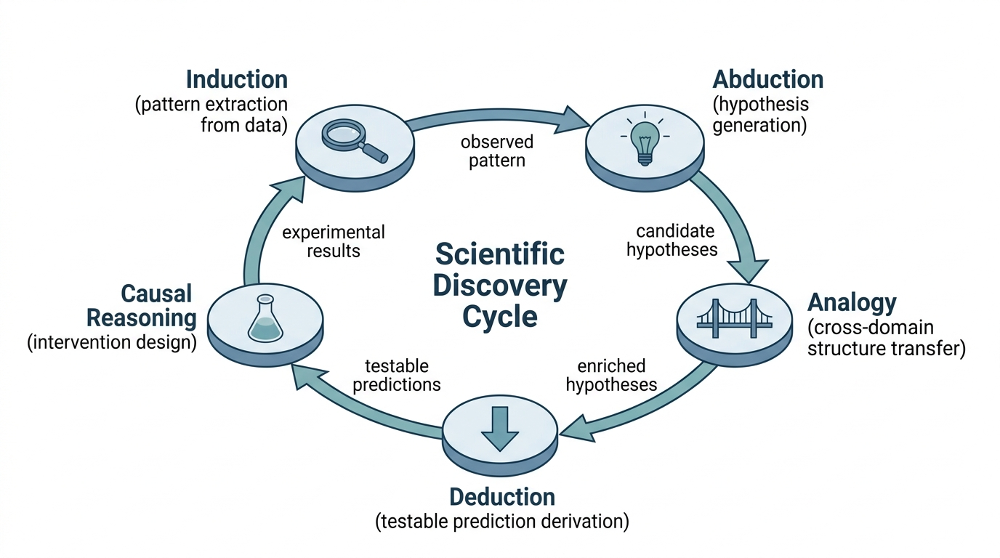

"I can prove that the sun will rise tomorrow from first principles. I can also prove it from the fact that it rose this morning. The second proof is shorter, but the first one impresses tenure committees."
A Deductive Engine With Inductive Tendencies
Prerequisites
This section assumes familiarity with propositional and first-order logic at the level introduced in Chapter 3: Knowledge Representation. You should be comfortable with logical connectives (\(\land\), \(\lor\), \(\neg\), \(\rightarrow\)), quantifiers (\(\forall\), \(\exists\)), and the idea of representing knowledge as graphs (from Section 3.1). Basic Python and the concept of search spaces from Chapter 1 complete the prerequisites.
Scientific discovery relies on multiple reasoning modes working together. Deduction derives consequences from known laws. Induction extracts patterns from data. Abduction proposes explanations for surprises. Analogy transfers knowledge across domains. Causal reasoning distinguishes "things that happen together" from "things that make other things happen." No single mode suffices; a discovery system must orchestrate all five. This section gives each mode a precise computational form and shows how they interlock in the scientific method.
1. Deductive Reasoning: From Axioms to Theorems
In 1846, astronomer Johann Galle pointed his telescope at a coordinate computed purely from Newton's laws and the wobble of Uranus, and Neptune was right there: a conclusion settled before anyone looked through the lens. That is the power of deduction, the only reasoning mode where true premises guarantee a true conclusion. Its canonical form is the syllogism, attributed to Aristotle:
Deductive reasoning derives specific conclusions from general premises through rules of logical inference. The truth of the premises guarantees the truth of the conclusion. This guarantee matters because it is the only one in the reasoning toolkit: when a scientist deduces that a hypothesis predicts a specific measurable outcome, that prediction is as reliable as the hypothesis itself. Experiments draw their power to falsify from this reliability. The mechanism chains inference rules (modus ponens, modus tollens (where \(P \rightarrow Q\) and \(\neg Q\) yield \(\neg P\)), universal instantiation (where \(\forall x\, P(x)\) yields \(P(a)\) for any specific \(a\))) so that each step preserves truth, producing a proof whose final line is the desired conclusion. Use deduction when you need guaranteed conclusions from accepted premises. Prefer induction (Section 2 below) when you lack general rules and must discover them from data, or abduction (Section 3) when you need to generate explanations rather than derive consequences.
$$ \frac{P \rightarrow Q, \quad P}{Q} \quad \text{(Modus Ponens)} $$In scientific discovery, deduction plays a specific role: deriving the observable consequences of a hypothesis. If a proposed mechanism is correct, what should we expect to measure? Deduction converts theoretical claims into testable predictions. Without it, hypotheses remain unfalsifiable.
From Logic to Computation
The computational workhorse of deduction is resolution refutation, introduced by Robinson (1965). To prove that a conclusion \(C\) follows from premises \(\{P_1, \ldots, P_n\}\), we negate \(C\), add \(\neg C\) to the premise set, convert everything to clausal form (where each statement is rewritten as a disjunction of literals, that is, an OR of possibly negated atomic propositions), and search for a contradiction (the empty clause \(\square\)). If we find one, the original conclusion must hold.
Resolution in Practice
The resolution rule operates on clauses (disjunctions of literals). Given two clauses that contain complementary literals, we can derive a new clause:
$$ \frac{A \lor L, \quad B \lor \neg L}{A \lor B} \quad \text{(Resolution)} $$To make resolution work with first-order logic (variables, quantifiers, predicates), we need unification: finding a substitution \(\theta\) that makes two terms identical. For example, unifying \(\text{causes}(X, \text{fever})\) with \(\text{causes}(\text{malaria}, Y)\) yields \(\theta = \{X/\text{malaria}, Y/\text{fever}\}\).
Checkpoint
So far: deduction chains inference rules to guarantee conclusions; its computational engine is resolution refutation, which converts premises and the negated goal into clausal form and searches for a contradiction; unification extends this engine to handle variables and quantifiers in first-order logic.
The following minimal resolution-based theorem prover captures the core loop that automated reasoning systems use to derive conclusions from knowledge bases, a pattern that returns in Chapter 38: Knowledge Graph Discovery when we query structured scientific knowledge.
from itertools import combinations
from typing import Set, FrozenSet, Optional
# A literal is a (predicate, is_negated) pair for simplicity
# A clause is a frozenset of literals
Literal = tuple[str, bool] # ("rains", True) means NOT rains
Clause = FrozenSet[Literal]
def negate(lit: Literal) -> Literal:
"""Flip the sign of a literal."""
return (lit[0], not lit[1])
def resolve(c1: Clause, c2: Clause) -> Optional[Clause]:
"""Apply the resolution rule to two clauses.
Returns the resolvent if a complementary pair exists, else None.
"""
for lit in c1:
neg_lit = negate(lit)
if neg_lit in c2:
# Build resolvent: union minus the complementary pair
resolvent = (c1 - {lit}) | (c2 - {neg_lit})
return frozenset(resolvent)
return None
def resolution_refutation(clauses: Set[Clause], goal: Clause) -> bool:
"""Prove 'goal' by refutation: negate goal, seek empty clause.
Args:
clauses: Set of premise clauses (knowledge base)
goal: The clause to prove (will be negated internally)
Returns:
True if goal follows from the premises
"""
# Negate goal: for a single-literal goal, just flip it
negated = frozenset({negate(lit) for lit in goal})
working = set(clauses) | {negated}
new_clauses: Set[Clause] = set()
while True:
pairs = list(combinations(working, 2))
for c1, c2 in pairs:
resolvent = resolve(c1, c2)
if resolvent is not None:
if len(resolvent) == 0:
return True # Empty clause: contradiction found
new_clauses.add(resolvent)
if new_clauses.issubset(working):
return False # No new clauses: cannot prove goal
working |= new_clauses
# Example: "All mammals are warm-blooded. Dogs are mammals.
# Therefore dogs are warm-blooded."
kb = {
# mammal(X) -> warm_blooded(X) becomes NOT mammal(X) OR warm_blooded(X)
frozenset({("mammal", True), ("warm_blooded", False)}),
# mammal(dog)
frozenset({("mammal", False)}),
}
goal = frozenset({("warm_blooded", False)}) # Prove: warm_blooded(dog)
print(f"Goal proven: {resolution_refutation(kb, goal)}")
# Output: Goal proven: TrueResolution refutation is refutation-complete (meaning that if a conclusion logically follows from the premises, the procedure is guaranteed to find a proof) for first-order logic: if a conclusion follows from the premises, resolution will eventually find the empty clause. This completeness guarantee is why Prolog, the language that powered early AI reasoning systems, uses resolution as its inference engine. However, the search space grows combinatorially with the number of clauses, which is why practical systems use heuristics (set-of-support, unit preference) to guide the search. The search strategies from Chapter 1 apply directly here.
2. Inductive Reasoning: From Instances to Generalizations
Where deduction goes from general to specific, induction goes from specific to general. After observing that copper conducts electricity, and iron conducts electricity, and aluminum conducts electricity, we induce "metals conduct electricity." The conclusion is not guaranteed (some alloys are poor conductors), but it captures a useful pattern.
Common Misconception
Readers frequently confuse inductive reasoning (generalizing from specific observations to broader rules) with mathematical induction (a deductive proof technique for statements about natural numbers). Despite sharing a name, these are opposites in a crucial respect: mathematical induction produces certainty because it is a form of deduction (proving a base case and an inductive step that together cover all cases), while scientific induction produces only probable conclusions because no finite set of observations can rule out future counterexamples.
Computationally, induction corresponds to learning: given examples \((x_1, y_1), \ldots, (x_n, y_n)\), find a rule \(f\) such that \(f(x_i) \approx y_i\) and, critically, \(f\) generalizes to unseen data. Every supervised learning algorithm is an inductive reasoning engine. The bias-variance tradeoff is the computational shadow of the philosophical problem of induction. Simpler rules generalize better but may miss true complexity. Complex rules fit the data perfectly but may not generalize at all.
For discovery, inductive reasoning serves two purposes. First, it identifies empirical regularities (patterns, correlations, clusters) that become the raw material for explanation. Second, it builds predictive models that can be tested against new observations. The interplay between induction (pattern finding) and deduction (consequence derivation) is the engine of the hypothetico-deductive method, which we discussed in Chapter 2.
Enumerative Induction as Concept Learning
The simplest form of induction is enumerative: count positive examples and generalize. Mitchell's version space algorithm (1982) formalizes this by maintaining the version space (the set of all hypotheses consistent with the observed data), bounded by the most general and most specific hypotheses. As examples arrive, the version space shrinks until (ideally) a single hypothesis remains.
from dataclasses import dataclass
@dataclass(frozen=True)
class Hypothesis:
"""A conjunctive hypothesis: each attribute is a value or '?' (any)."""
attrs: tuple[str, ...]
def covers(self, example: tuple[str, ...]) -> bool:
"""Does this hypothesis classify the example as positive?"""
return all(
h == "?" or h == e
for h, e in zip(self.attrs, example)
)
def generalize_to(self, example: tuple[str, ...]) -> "Hypothesis":
"""Minimally generalize to cover this example."""
new_attrs = tuple(
h if h == e else "?"
for h, e in zip(self.attrs, example)
)
return Hypothesis(new_attrs)
# Scientific induction: when does a chemical reaction produce gas?
# Attributes: (acid_type, metal_type, temperature)
positive_examples = [
("HCl", "zinc", "room"),
("HCl", "iron", "room"),
("H2SO4", "zinc", "room"),
]
# Start with the most specific hypothesis (first positive example)
hypothesis = Hypothesis(positive_examples[0])
print(f"Initial: {hypothesis.attrs}")
# Generalize to cover each subsequent positive example
for ex in positive_examples[1:]:
if not hypothesis.covers(ex):
hypothesis = hypothesis.generalize_to(ex)
print(f"After {ex}: {hypothesis.attrs}")
print(f"\nInduced rule: {hypothesis.attrs}")
# Output:
# Initial: ('HCl', 'zinc', 'room')
# After ('HCl', 'iron', 'room'): ('HCl', '?', 'room')
# After ('H2SO4', 'zinc', 'room'): ('?', '?', 'room')
# Induced rule: ('?', '?', 'room')
# Interpretation: "Any acid + any metal at room temperature produces gas"The induced rule above is wrong (not all metals react with acids at room temperature; gold and platinum famously resist). This is not a bug in the algorithm; it is the fundamental limitation of induction. As David Hume pointed out in 1739, no finite set of observations can logically guarantee a universal claim. Discovery AI systems must treat induced rules as candidates to be tested, not as established truths. The pipeline in Section 4.4 embodies exactly this philosophy.
Induction gives us candidate patterns, but patterns alone do not explain why something happens; for that, we need a reasoning mode that works backward from observations to their underlying causes.
3. Abductive Reasoning: Inference to the Best Explanation
Abduction, formalized by Charles Sanders Peirce, is the reasoning mode most central to scientific discovery. Given a surprising observation \(O\) and background knowledge \(K\), abduction asks: what hypothesis \(H\), if true, would make \(O\) expected?
$$ \frac{O \text{ is observed}, \quad H \text{ would explain } O}{H \text{ is plausible}} $$Unlike deduction, abduction is not truth-preserving. Many hypotheses could explain the same observation. A patient's fever could be caused by infection, autoimmune disease, drug reaction, or heat stroke. Abduction generates candidates; it does not select among them without additional criteria (parsimony, testability, consistency with prior knowledge).
Mental Model
Think of abduction as a detective arriving at a crime scene. The detective sees a broken window, muddy footprints leading to an empty safe, and an alarm that was disabled. No single piece of evidence dictates the conclusion, but the detective assembles an explanation (a burglar entered through the window, walked to the safe, and cracked it after cutting the alarm) because that story, if true, would make all the evidence expected. A different detective might propose a different story (an inside job staged to look like a break-in). Abduction is the act of constructing these candidate stories, not proving which one is correct. The "selection criteria" (parsimony, testability, consistency) are the investigative follow-up: dusting for prints, checking alibis, reviewing security footage. In science, the candidate stories are hypotheses, and the follow-up is experimentation.
Computationally, abduction can be framed as an optimization problem: find the hypothesis \(H^*\) that maximizes some combination of explanatory power and simplicity. One simplified scoring function (not a formal posterior, but a useful heuristic) is:
$$ H^* = \arg\max_{H \in \mathcal{H}} \left[ \text{P}(O \mid H) \cdot \text{P}(H) \cdot \text{simplicity}(H) \right] $$This Bayesian formulation connects abduction to Chapter 32: Bayesian Discovery and Uncertainty, which develops the full machinery of Bayesian model comparison. The likelihood \(P(O \mid H)\) measures explanatory power (how well does the hypothesis predict the observation?), the prior \(P(H)\) encodes background plausibility, and the simplicity term implements Occam's razor.
A patient presents with joint pain, butterfly rash, and fatigue. A diagnostic reasoning system generates candidate explanations:
- Lupus: explains all three symptoms (high explanatory coverage)
- Rheumatoid arthritis + sunburn: explains joint pain and rash separately but requires two independent causes (lower simplicity)
- Chronic fatigue syndrome + unrelated dermatitis: explains fatigue and rash but not joint pain (incomplete coverage)
Abductive scoring ranks lupus highest because it achieves maximum explanatory coverage with a single mechanism. This is the same logic that drives scientific hypothesis generation: prefer theories that explain more data with fewer assumptions.
Abduction generates candidate explanations, yet the space of possible hypotheses is vast; analogical reasoning narrows it by importing structural templates from domains where similar problems have already been solved.
4. Analogical Reasoning: Structure Mapping Across Domains
Analogical reasoning transfers knowledge from a well-understood source domain to a less-understood target domain by mapping shared structure. Rutherford modeled the atom by analogy with the solar system: electrons orbit the nucleus as planets orbit the sun. The analogy transfers relations (orbiting, gravitational/electromagnetic attraction) rather than surface features (size, color, temperature).
Dedre Gentner's Structure Mapping Theory (1983) formalizes this intuition. An analogy is good when:
- Relational matches outnumber attribute matches (systematicity principle)
- The mapped relations form connected, higher-order structures (not isolated pairings)
- The mapping is one-to-one (each source element maps to exactly one target element)
The Structure Mapping Engine (SME), Gentner and Forbus's computational realization, works by: (1) finding all local matches between source and target predicates, (2) combining consistent matches into global mappings (called gmaps), and (3) scoring gmaps by structural depth. The following simplified version captures the core algorithm.
import networkx as nx
from dataclasses import dataclass, field
@dataclass
class Predicate:
"""A relational predicate: name(arg1, arg2, ...)"""
name: str
args: tuple[str, ...]
is_relation: bool = True # True for relations, False for attributes
def __hash__(self):
return hash((self.name, self.args))
@dataclass
class StructureMapping:
"""A mapping between source and target domain elements."""
entity_map: dict[str, str] = field(default_factory=dict)
predicate_matches: list[tuple[Predicate, Predicate]] = field(
default_factory=list
)
score: float = 0.0
def find_analogies(
source: list[Predicate],
target: list[Predicate]
) -> list[StructureMapping]:
"""Simplified Structure Mapping Engine.
Finds consistent mappings between source and target domains,
preferring relational matches over attribute matches.
"""
# Step 1: Find all local matches (predicates with same name)
local_matches = []
for s_pred in source:
for t_pred in target:
if (s_pred.name == t_pred.name and
len(s_pred.args) == len(t_pred.args)):
local_matches.append((s_pred, t_pred))
# Step 2: Build consistent global mappings (greedy)
mappings = []
for s_pred, t_pred in local_matches:
mapping = StructureMapping()
consistent = True
for s_arg, t_arg in zip(s_pred.args, t_pred.args):
if s_arg in mapping.entity_map:
if mapping.entity_map[s_arg] != t_arg:
consistent = False
break
else:
mapping.entity_map[s_arg] = t_arg
if consistent:
mapping.predicate_matches.append((s_pred, t_pred))
# Gentner's systematicity: relations score higher
mapping.score = sum(
2.0 if sp.is_relation else 0.5
for sp, _ in mapping.predicate_matches
)
mappings.append(mapping)
return sorted(mappings, key=lambda m: m.score, reverse=True)
# Solar system -> Atom analogy
source_domain = [
Predicate("revolves_around", ("planet", "sun"), is_relation=True),
Predicate("attracts", ("sun", "planet"), is_relation=True),
Predicate("more_massive", ("sun", "planet"), is_relation=True),
Predicate("hot", ("sun",), is_relation=False),
Predicate("yellow", ("sun",), is_relation=False),
]
target_domain = [
Predicate("revolves_around", ("electron", "nucleus"), is_relation=True),
Predicate("attracts", ("nucleus", "electron"), is_relation=True),
Predicate("more_massive", ("nucleus", "electron"), is_relation=True),
]
analogies = find_analogies(source_domain, target_domain)
best = analogies[0]
print("Best analogy mapping:")
for src, tgt in best.entity_map.items():
print(f" {src} -> {tgt}")
print(f"Structural score: {best.score}")
print(f"Matched relations: {len(best.predicate_matches)}")
# Output:
# Best analogy mapping:
# planet -> electron
# sun -> nucleus
# Structural score: 2.0
# Matched relations: 1The full Structure Mapping Engine (SME) is available as part of the Companions Cognitive Architecture from Northwestern's QRG group. For graph-based similarity in Python, networkx.algorithms.similarity.graph_edit_distance() provides a related (though less semantically informed) measure in one function call. For production analogical retrieval, vector similarity search over relational embeddings (Chapter 26) often outperforms symbolic matching on unstructured domains.
Analogy suggests which relationships might hold in a new domain, but it cannot tell us which of those relationships are genuinely causal rather than merely coincidental; that distinction requires its own reasoning mode.
5. Causal Reasoning: Beyond Correlation
Causal reasoning asks not "what tends to co-occur?" but "what makes what happen?" This distinction, which we develop fully in Section 4.3, is the single most important intellectual tool for scientific discovery. An observed correlation between ice cream sales and drowning deaths does not mean ice cream causes drowning; both are caused by a common factor (summer heat).
Formally, causal reasoning requires a causal model: a directed acyclic graph (DAG; a graph whose edges have directions and that contains no loops, so causes always point forward and never circle back to themselves) whose nodes are variables and whose edges represent direct causal influence. The DAG encodes which interventions (setting a variable to a specific value, regardless of its usual causes) will affect which outcomes. This is Pearl's distinction between \(P(Y \mid X = x)\) (observing that \(X\) takes value \(x\)) and \(P(Y \mid do(X = x))\) (intervening to set \(X\) to \(x\)).
The full treatment of do-calculus appears in Section 4.3. The key distinction: statistics tells us what to expect; causal reasoning tells us what will happen if we act. For discovery AI, this is not philosophical luxury; it determines whether a system can design experiments or merely observe correlations.
Even a minimal causal model makes the observation/intervention distinction concrete. The following sketch encodes a three-variable DAG and shows how conditioning on an observation differs from intervening with do.
from dataclasses import dataclass
@dataclass
class CausalDAG:
"""A tiny causal model: edges map child -> list of parents."""
edges: dict[str, list[str]]
probs: dict[str, dict] # node -> conditional probability table
def observe(self, node: str, value: int) -> dict[str, float]:
"""P(other nodes | node = value): condition, do NOT cut edges."""
# Simplified: return stored conditionals (full Bayes net would
# propagate through all paths, including non-causal ones)
return {
"mode": "observation",
"conditioned_on": f"{node}={value}",
"note": "Correlations flow along ALL paths, causal or not",
}
def intervene(self, node: str, value: int) -> dict[str, float]:
"""P(other nodes | do(node = value)): cut incoming edges first."""
modified_edges = {
k: ([] if k == node else v)
for k, v in self.edges.items()
}
return {
"mode": "intervention (do-operator)",
"set": f"do({node}={value})",
"edges_removed": f"incoming edges to {node}",
"note": "Only CAUSAL downstream effects remain",
"modified_dag": modified_edges,
}
# Ice-cream / drowning / summer-heat example
dag = CausalDAG(
edges={
"summer_heat": [], # root cause
"ice_cream_sales": ["summer_heat"], # heat -> ice cream
"drowning_rate": ["summer_heat"], # heat -> drowning
},
probs={} # omitted for brevity; Section 4.3 adds full tables
)
print("Observe high ice-cream sales:")
print(dag.observe("ice_cream_sales", 1))
# Correlation with drowning_rate flows through summer_heat
print("\nIntervene to increase ice-cream sales:")
print(dag.intervene("ice_cream_sales", 1))
# do() cuts the summer_heat -> ice_cream edge;
# drowning_rate is no longer affectedJimenez et al. (2024) introduced CRAB (Causal Reasoning Assessment Benchmark), a suite that tests whether AI systems can perform end-to-end causal discovery: identifying variables, proposing DAG structures, and predicting the effects of interventions on held-out data. Concurrent work by Chen et al. (2024) on CausalBench demonstrated that combining large language model (LLM)-generated causal hypotheses with constraint-based structure learning (Peter-Clark (PC) and Fast Causal Inference (FCI) algorithms) produces causal graphs that outperform either approach alone, achieving up to 25% higher structural Hamming distance (a metric counting the number of edge additions, deletions, and reversals needed to transform one graph into another) accuracy on the biological regulatory networks tested (though gains varied across dataset size and network density). These results suggest that the next generation of discovery systems will blend neural language priors with classical causal inference algorithms rather than relying on either in isolation. We revisit this hybrid architecture in Chapter 29.
6. How the Five Forms Interlock in Discovery
Systems that rely on a single reasoning mode fail in predictable ways: a purely deductive planner cannot generate novel hypotheses, a purely inductive learner cannot design the experiment that would test them, and a purely abductive engine proposes explanations it can never verify. Real scientific breakthroughs require all five modes working in concert.
The five reasoning forms are not alternatives; they are collaborators in the discovery process. Figure 4.1 illustrates how the modes feed into one another in a typical discovery cycle:
- Induction identifies a surprising pattern in data (e.g., a new correlation)
- Abduction generates candidate explanations for the pattern
- Analogy transfers structural knowledge from related domains to enrich the candidates
- Deduction derives testable predictions from each candidate hypothesis
- Causal reasoning designs interventions that distinguish between candidates

This cycle maps directly onto the scientific method covered in Chapter 2. The Discovery Workbench we build throughout this book (starting in Chapter 6) orchestrates these reasoning modes as distinct components in a pipeline architecture. In short: each reasoning mode answers a question the others cannot ask, and scientific discovery is the conversation among all five. Figure 4.1.1 illustrates the five-mode discovery reasoning cycle.
from enum import Enum, auto
class ReasoningMode(Enum):
DEDUCTION = auto() # Derive consequences from known rules
INDUCTION = auto() # Generalize from observed instances
ABDUCTION = auto() # Infer best explanation for observations
ANALOGY = auto() # Transfer structure across domains
CAUSAL = auto() # Distinguish correlation from mechanism
def discovery_cycle(observation: str) -> dict:
"""Orchestrate the five reasoning modes in a discovery cycle.
This is a structural sketch; the full implementation appears
in Section 4.4 where we build the complete pipeline.
"""
cycle = {}
# Step 1: What pattern did we find?
cycle[ReasoningMode.INDUCTION] = {
"task": "Extract pattern from observation",
"input": observation,
"output": "Empirical regularity or anomaly"
}
# Step 2: What could explain it?
cycle[ReasoningMode.ABDUCTION] = {
"task": "Generate candidate explanations",
"input": "Observed pattern + background knowledge",
"output": "Ranked list of hypotheses"
}
# Step 3: Do similar phenomena exist elsewhere?
cycle[ReasoningMode.ANALOGY] = {
"task": "Find structural parallels in other domains",
"input": "Candidate hypotheses + domain knowledge base",
"output": "Enriched hypotheses with transferred structure"
}
# Step 4: What would each hypothesis predict?
cycle[ReasoningMode.DEDUCTION] = {
"task": "Derive testable predictions",
"input": "Each candidate hypothesis",
"output": "Observable consequences per hypothesis"
}
# Step 5: What experiment distinguishes them?
cycle[ReasoningMode.CAUSAL] = {
"task": "Design discriminating interventions",
"input": "Predictions + causal model",
"output": "Experimental protocol"
}
return cycle
# Example: unexpected drug interaction observed
result = discovery_cycle(
"Patients taking Drug A and Drug B show unexpected liver enzyme elevation"
)
for mode, step in result.items():
print(f"{mode.name:12s} -> {step['task']}")The five reasoning forms differ in their direction of inference and their strength of conclusion. Deduction goes from general rules to specific consequences and is truth-preserving. Induction goes from specific instances to general rules and is ampliative, meaning the conclusion asserts more than the premises alone contain. Abduction goes from effects to causes and is defeasible, meaning new evidence can overturn a previously accepted conclusion. Analogy goes from one domain to another and is heuristic (it suggests rather than proves). Causal reasoning goes from observation to intervention and is identification-dependent (it works only if the causal structure is identified). A discovery system that confuses these modes will draw conclusions stronger than the evidence warrants.
Try It: Classify Reasoning Modes in Real Papers
Build a small Python tool that takes a scientific abstract and tags each sentence with its dominant reasoning mode. This exercise connects all five forms to real scientific text.
- Collect abstracts. Use the
requestslibrary to fetch 5 abstracts from the PubMed API (https://eutils.ncbi.nlm.nih.gov/entrez/eutils/efetch.fcgi) on a topic of your choice. Store each abstract as a plain string. - Define a classifier. Write a function
classify_sentence(sentence: str) -> strthat uses keyword heuristics to assign one of the five modes. For example, sentences containing "we observed," "data show," or "N = " suggest induction; "therefore," "it follows," or "predicts that" suggest deduction; "may explain," "we hypothesize," or "suggests a mechanism" suggest abduction; "similar to," "analogous," or "as in" suggest analogy; "intervention," "caused by," or "leads to" suggest causal reasoning. - Tokenize and tag. Split each abstract into sentences using
nltk.sent_tokenize()(install withpip install nltk). Apply your classifier to each sentence and print the result as(mode, sentence)pairs. - Evaluate coverage. Count how many sentences each mode captures. Identify any sentences your heuristics miss and add patterns to handle them.
- Reflect. Pick one abstract where the ordering of modes matches the discovery cycle from Section 6 above. Write a one-paragraph explanation of how the authors moved through the cycle in their paper.
Exercise 4.1.1
Given the following three propositional clauses in a knowledge base: (1) \(\neg A \lor B\), (2) \(\neg B \lor C\), (3) \(A\), use resolution refutation by hand to prove that \(C\) follows. Write out each resolution step, showing which two clauses you resolve and the resulting resolvent, until you derive the empty clause.
Hint
Start by negating the goal: add \(\neg C\) to the clause set. Then resolve clause (3) with clause (1) to obtain \(B\). Continue resolving the new clause with the remaining ones until no literals remain.Step-Through: Resolution Refutation
Trace the resolution algorithm from Listing 4.1 on a tiny knowledge base. Premises: (1) \(\neg P \lor Q\) ("if P then Q"), (2) \(\neg Q \lor R\) ("if Q then R"), (3) \(P\) ("P is true"). Goal: prove \(R\).
Step 0 (negate goal): Add \(\neg R\) to the clause set. Working set = {\(\neg P \lor Q\), \(\neg Q \lor R\), \(P\), \(\neg R\)}.
Step 1: Resolve \(P\) with \(\neg P \lor Q\). Complementary pair: \(P\) and \(\neg P\). Resolvent: \(Q\). Working set gains \(Q\).
Step 2: Resolve \(Q\) with \(\neg Q \lor R\). Complementary pair: \(Q\) and \(\neg Q\). Resolvent: \(R\). Working set gains \(R\).
Step 3: Resolve \(R\) with \(\neg R\). Complementary pair: \(R\) and \(\neg R\). Resolvent: \(\square\) (empty clause). Contradiction found, so the original goal \(R\) is proven.
Real-World Application: Drug Repurposing via Analogical Reasoning
BenevolentAI reportedly used a form of structure mapping to identify baricitinib (a rheumatoid arthritis drug) as a candidate treatment for COVID-19 in early 2020. The system mapped the relational structure of viral cell entry mechanisms onto known kinase inhibition pathways, transferring the insight that baricitinib blocks AAK1 (a kinase involved in viral endocytosis) from the arthritis domain to the infectious disease domain. Clinical trials later confirmed efficacy, and the U.S. Food and Drug Administration (FDA) issued an emergency use authorization. This is analogical reasoning operating at industrial scale: same relational match, different surface domains.
Lab: Comparing Induction Strategies on a Concept Learning Task
Goal: Observe how the order and composition of training examples affect the generality of induced hypotheses.
Tools needed: Python 3, no external libraries required (the Hypothesis class from Listing 4.2 is sufficient).
Setup (5 min): Copy the Hypothesis class from Listing 4.2. Create a dataset of 12 chemical reactions as tuples of (acid, metal, temperature, produces_gas), including both positive and negative examples. Include at least two acids, three metals, and two temperatures.
Experiment (15 min): Run the generalization algorithm from Listing 4.2 on three different orderings of the same positive examples. For each ordering, record the hypothesis after each example is processed. Then vary the subset: use only 3 positive examples, then 5, then all. Record the final hypothesis each time.
What to vary: (a) Presentation order of examples, (b) number of positive examples shown, (c) inclusion or exclusion of "boundary" examples (cases where only one attribute differs from a negative example).
What to observe: Does the final hypothesis change with presentation order? (It should not for this algorithm, but intermediate hypotheses will differ.) How quickly does the hypothesis over-generalize when negative examples are absent? At what point does adding more positive examples stop changing the hypothesis? Write a one-paragraph summary comparing the three orderings and three subset sizes.
Exercises
- Conceptual: For each of the following scientific discoveries, identify the primary reasoning mode at work: (a) Mendeleev predicting undiscovered elements from gaps in the periodic table, (b) Fleming noticing that bacteria did not grow near a mold contamination, (c) Kekulé proposing the ring structure of benzene after dreaming of a snake biting its tail. Justify each classification.
- Coding: Extend the resolution refutation engine in Listing 4.1 to handle first-order logic by adding a
unify()function that finds the most general unifier of two terms. Test it on: "All scientists who reason carefully discover truths. Marie is a scientist who reasons carefully. Therefore, Marie discovers truths." - Analysis: The Structure Mapping Engine scores relational matches higher than attribute matches. Construct a scenario where this preference leads to a misleading analogy. What additional scoring criteria would prevent the error?
What's Next
We have defined five reasoning forms and given each a computational realization. Section 4.2: Reasoning in Language Models examines how modern language models perform (and fail at) these reasoning tasks, introducing chain-of-thought prompting, scratchpad methods, and the now established class of reasoning models (such as OpenAI's o1 and o3 series, DeepSeek-R1, and Claude with extended thinking, as of 2025) that allocate extra computation at inference time.
Bibliography
Foundational Papers
Introduced resolution refutation as a complete inference procedure for first-order logic. The basis of Prolog and all resolution-based theorem provers discussed in this section.
Defines analogy as the mapping of relational structure (not surface features) between domains. The systematicity principle and one-to-one mapping constraint are the core of SME.
The computational implementation of structure-mapping theory. Describes the match, merge, and scoring algorithms that we simplified in Listing 4.3.
Books
The definitive treatment of causal models, do-calculus, and counterfactual reasoning. Foundation for Section 4.3 and Chapter 31.
Original articulation of abduction as "inference to the best explanation." Peirce distinguished abduction from both deduction and induction, defining the triad that structures this section.
Formalized inductive learning as search through hypothesis space. The version space and candidate elimination algorithms are the computational realizations of enumerative induction.
Surveys & Tutorials
Comprehensive survey of reasoning in LLMs, covering deductive, inductive, abductive, analogical, and mathematical reasoning. Useful context for Section 4.2.
Evaluates LLM causal reasoning capabilities across discovery, identification, and counterfactual tasks. Shows competence at retrieving known causal facts but weakness on novel structures.
Authoritative philosophical overview of abduction, covering Peirce's original formulation, the inference-to-best-explanation interpretation, and the Bayesian explication.